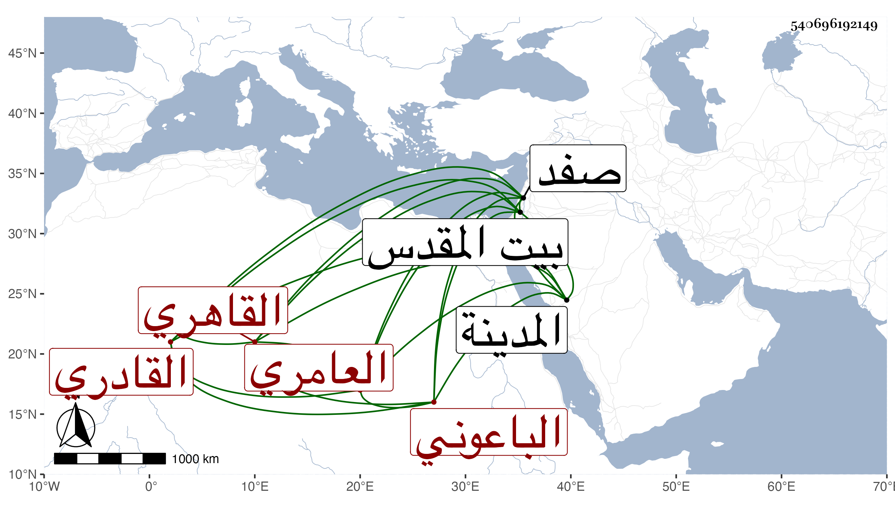

0902Sakhawi.DawLamic.ITO20230111-ara1.EIS1600.540696192149
Biography ID: 540696192149
76
محمد بن محمد بن هلال بن علي بن صفوان بن تامر بن منصور العامري الباعوني الأصل القاهري القادري ويعرف بابن هلال من نفر يقال لهم بنو عامر بباعونة من أعمال صفد . ولد سنة ثلاث وثمانمائة تقريبا وحفظ القرآن وصلى به في الجمالية المستجدة في رمضان على العادة وقرأ دروسا في التبريزي على الشمس البوصيري ولازمه كثيرا وكذا لازم الجمال يوسف الصفي وغيرهما وسمع على الفوى وشيخنا وغيرهما ومن لفظ الكلوتاتي ، وحج وجاور وأقام بالمدينة النبوية أياما ، وزار بيت المقدس وباشر التقدمة بأبواب الولاة كسلفه ولكن غلب عليه الخير وحل عليه نظر السادات فكان مع ذلك يلازم الجماعة ويشهد مجالس الخير مع لطافة عشرة وأنس خدمة لمن ينتسب للعلم والصلاح وهو ممن صحب إمام الكاملية سفرا وحضرا وأكثر من التردد إلي ثم أعرض عن التقدمة وأقلع عنها أصلا ولازم طريقته في الخير إلى أن تعلل مديدة ثم مات في ليلة الجمعة تاسع عشر ذي القعدة سنة ثلاث وثمانين وصلي عليه من الغد رحمه الله وعفا عنه .
